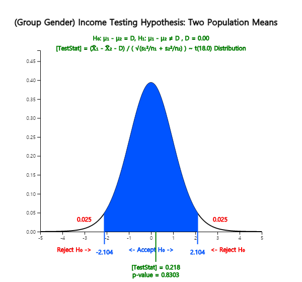

There are many examples comparing means of two populations as follows:
- Is there a difference between the starting salary of male graduates and of female graduates in this year’s college graduates?
- Is there a difference in the weight of the products produced in the two production lines?
- Did the special training for typists to increase the speed of typing really bring about an increase in the speed of typing?
As such, a comparison of the two population means ( and ) is possible by testing hypothesis that the difference in the population means is greater than, or less than, or equal to zero. The comparison of two population means differs depending on whether samples are extracted independently from each population or not (referred to as paired samples).
8.1.1 Two Independent Samples
Generally, testing hypothesis for two population means can be divided into three types,
depending on the type of the alternative hypothesis as follows.
$$
\begin{multline}
\shoveleft 1)\quad H_0 : \mu_1 - \mu_2 = D_0 \qquad H_1 : \mu_1 - \mu_2 \gt D_0 \\
\shoveleft 2)\quad H_0 : \mu_1 - \mu_2 = D_0 \qquad H_1 : \mu_1 - \mu_2 \lt D_0 \\
\shoveleft 3)\quad H_0 : \mu_1 - \mu_2 = D_0 \qquad H_1 : \mu_1 - \mu_2 \ne D_0 \\
\end{multline}
$$
Here \(D_0\) is the value for the difference in population means to be tested.
When samples are selected independently from each other in the population,
the estimator of the difference of the population means \(\mu_1 - \mu_2\) is the difference
in sample means \({\overline x}_1 - {\overline x}_2\). The sampling distribution of
all possible sample mean differences is approximately a normal distribution with the mean
\(\mu_1 - \mu_2\) and variance \(\frac{\sigma^2_1}{n_1} + \frac{\sigma^2_2}{n_2}\)
if both sample sizes are large enough.
Since the population variances \( \sigma^2_1 \) and \( \sigma^2_2 \) are usually unknown,
estimates of these variances, \( s^2_1 \) and \( s^2_2 \), are used to test the hypothesis.
The test statistic differs slightly depending on the assumption of two population variances.
If two populations follow normal distributions and their variances can be assumed the same,
the testing hypothesis for the difference of two population means uses the following statistic.
$$
\frac { ({\overline x}_1 - {\overline x}_2 ) - D_0 }{\sqrt{\frac{s^2_p}{n_1} +\frac{s^2_p}{n_2} } }
\qquad \text{where } s^2_p = \frac{(n_1 -1 )s^2_1 + (n_2 -1)s^2_2}{n_1 + n_2 -2}
$$
\(s^2_p\) is an estimator of the population variance called as a pooled variance
which is an weighted average of two sample variances \( s^2_1 \) and \( s^2_2 \) by using
the sample sizes as weights when population variances are assumed to be the same.
The above statistic follows a \(t\)-distribution with \(n_1 + n_2 -2\) degrees of freedom
and it is used to test the difference of two population means as follows:
Table 8.1.1 Testing hypothesis of two population means
- independent samples, populations are normal distributions, two population variances are assumed to be equal
Note: If sample sizes are large enough (\(n_1 > 30, n_2 >30 \)), \(t\)-distribution is
approximately close to the standard normal distribution and the decision rule may use the standard
normal distribution.
Example 8.1.1
Two machines produce cookies at a factory and the average weight of a cookie bag should be 270g. Cookie bags were sampled from each of two machines to examine the weight of the cookie bag. The average weight of 15 cookie bags extracted from the machine 1 was 275g and their standard deviation was 12g, and the average weight of 14 cookie bags extracted from the machine 2 was 269g and the standard deviation was 10g. Test whether weights of cookie bags produced by two machines are different at the 1% significance level. Check the test result using 『eStatU』.
Answer
The hypothesis of this problem is \(\small H_0 : \mu_1 = \mu_2 ,\, H_1 : \mu_1 \ne \mu_2 \). Hence the decision rule is as follows.
$$ \small
\begin{multline}
\shoveleft ‘\text{If } \left | \frac { ({\overline x}_1 - {\overline x}_2 ) - D_0 }{\sqrt{\frac{s^2_p}{n_1} +\frac{s^2_p}{n_2} } } \right | > t_{n_1 + n_2 -2; α/2} , \text{ then reject } H_0 ’ \\
\end{multline}
$$
where \(\small D_0 = 0\) and the information in this example can be summarized as follows.
$$ \small
\begin{multline}
\shoveleft n_1 = 15,\quad \overline x_1 = 275,\quad s_1 = 12 \\
\shoveleft n_2 = 14,\quad \overline x_2 = 269,\quad s_2 = 10 \\
\end{multline}
$$
Therefore, the calculation of the statistics are as follows.
$$ \small
\begin{multline}
\shoveleft s^2_p = \frac{(n_1 -1 )s^2_1 + (n_2 -1)s^2_2}{n_1 + n_2 -2}
= \frac{(15 - 1 ) 12^2 + (14 - 1) 10^2}{15 + 14 -2} = 122.815 \\
\shoveleft \left | \frac {275 - 269} { \sqrt{\frac{122.815}{15} +\frac{122.815}{14} } } \right | = 1.457 \\
\shoveleft t_{15 + 14 -2; 0.01/2} = t_{27: 0.005} = 2.7707 \\
\end{multline}
$$
Since 1.457 < 2.7707, \(H_0\) can not be rejected.
In 『eStatU』 menu, select ‘Testing Hypothesis \(\mu_1 , \mu_2\)’, In the window shown in <Figure 8.1.1>,
check the alternative hypothesis of not equal case at [Hypothesis], check the variance assumption of
[Test Type] as the equal case, check the significance level of 1%, check the independent sample,
and enter sample sizes \(n_1 , n_2\), sample means \(\overline x_1 , \overline x_2\), and sample variances
as in <Figure 8.1.1>.
<Figure 8.1.1> Testing hypothesis for two population means using 『eStatU』
Click the [Execute] button will show the result of testing hypothesis as <Figure 8.1.2>.
<Figure 8.1.2> Testing hypothesis for two population means – case of the same population variances
If variances of two populations are different, the test statistic
$$
\frac { ({\overline x}_1 - {\overline x}_2 ) - D_0 }{\sqrt{\frac{s^2_1}{n_1} +\frac{s^2_2}{n_2} } }
$$
do not follow a \(t\)-distribution even if populations are normally distributed. The testing hypothesis
for two population means when their population variances are different is called a Behrens-Fisher problem
and several methods to solve this problem have been studied. The Satterthwaite method approximates
the degrees of freedom of the \(t\)-distribution in the decision rule in Table 8.1.1 with \(\phi\) as follows.
$$
\phi = \frac { \left( \frac{s_1^2}{n_1} + \frac{s_2^2}{n_2} \right)^2 }
{ \frac { \left( \frac{s_1^2}{n_1} \right)^2 } {n_1 -1} + \frac { \left( \frac{s_2^2}{n_2} \right)^2 } {n_2 -1} }
$$
Table 8.1.2 Testing hypothesis of two population means
- independent samples, populations are normal distributions, two population variances are assumed to be different
Example 8.1.2
If two population variances are assumed to be different in [Example 8.1.1], test whether weights of cookie bags produced from two machines are equal or not at a 1% significance level. Check the test result using 『eStatU』.
Answer
Since the population variances are different, the degrees of freedom of distribution is approximated as follows:
$$ \small
\begin{multline}
\shoveleft \phi = \frac { \left( \frac{12^2}{15} + \frac{10^2}{14} \right)^2 }
{ \frac { \left( \frac{12^2}{15} \right)^2 } {15 -1} + \frac { \left( \frac{10^2}{14} \right)^2 } {14 - 1} } = 26.67 \\
\shoveleft t_{26.7; 0.01/2} = 2.773 \\
\end{multline}
$$
Since 1.457 < 2.773, \(H_0\) can not be rejected.
In order to practice using 『eStatU』, select the different population variances assumption of [Test Type] in the window of <Figure 8.1.1> and click the [Execute] button to see the result as shown in <Figure 8.1.3>.
<Figure 8.1.3> Testing hypothesis for two population means – Case of two different population variances
Example 8.1.3
(Monthly wages by male and female)
Samples of 10 male and female college graduates this year were randomly taken and their monthly average wages were examined as follows: (Unit 10,000 KRW)
1) If population variances are assumed to be the same, test the hypothesis at the 5% significance level whether the average monthly wage for male and female is the same.
2) If population variances are assumed to be different, test the hypothesis at the 5% significance level whether the average monthly wage for male and female is the same.
Answer
1) In 『eStat』, enter raw data of gender (M or F) and income as shown in <Figure 8.1.4>
on the sheet. This type of data input is similar to all statistical packages.
After entering the data, click the icon for testing two population means and select
'Analysis Var' as V2 and 'By Group' variable as V1. A 95% confidence interval graph
that compares sample means of two populations will be displayed as <Figure 8.1.5>.
<Figure 8.1.4> Data input for testing two population means
<Figure 8.1.5> Dot graph and confidence Intervals by gender for testing two population means
In the options window as in <Figure 8.1.6> located at the below of the Graph Area,
enter the average difference \(\small D = 0\) for the desired test, select the variance assumption
\(\sigma_1^2 = \sigma_2^2\), select the 5% significance level and click the [t-test] button.
Then the graphical result of testing hypothesis for two population means will be shown as in <Figure 8.1.7> and the test result as in <Figure 8.1.8>.
<Figure 8.1.6> Options to test for two population means
<Figure 8.1.7> Testing hypothesis for and – case of the same population variances
<Figure 8.1.8> result of testing hypothesis for two population means if population variances are the same
2) Select the variance assumption \(\sigma_1^2 \ne \sigma_2^2\) at the option window and
click [t-test] button under the graph to display the graph of the hypothesis test and
the test result table as in <Figure 8.1.9> and <Figure 8.1.10>.

<Figure 8.1.9> Testing hypothesis for and – case of the different population variances
<Figure 8.1.10> result of testing hypothesis for two population means if population variances are different
Practice 8.1.1 (Oral Cleanliness by Brushing Methods)
Oral cleanliness scores were examined for 8 samples who are using the basic brushing method (coded 1) and 7 samples who are using the rotation method (coded 2). The data are saved at the following location of 『eStat』.
Ex ⇨ eBook ⇨ PR080101_ToothCleanByBrushMethod.csv
1) If population variances are the same, test the hypothesis at the 5% significance level whether scores for both brushing methods are the same using 『eStat』.
2) If population variances are different, test the hypothesis at the 5% significance level whether scores for both brushing methods are the same using 『eStat』.
Multiple Choice Exercise
*** Choose one answer and click [Submit] button
8.1 One professor claims that 'A student who studies in the morning will get better math score than a student who studies in the evening.' Assume that is the average exam score of students who study in the morning and is the average exam score of students who study in the evening. What is the null hypothesis of this test?
8.2 What is the alternative hypothesis of the test of the above question 8.1?
8.3 A researcher claims that “After age of 40 and over, there is no difference in weight between male and female.” Assume the average weight of males whose age is 40 and more is and the average weight of females whose age is 40 and more is . What is the alternative hypothesis of the test?
8.4 We want to test whether two population means are equal or not using t-test. Which one of the following is not a required assumption?
8.5 Which sampling distribution is used to test whether two population means are equal or not when sample sizes are small?